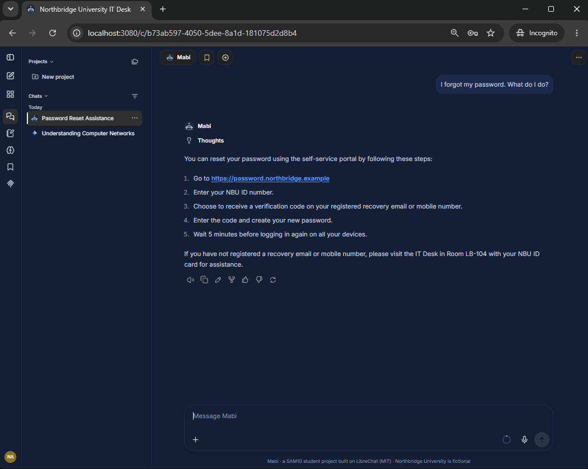
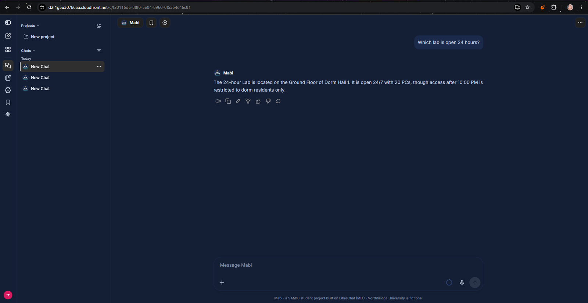
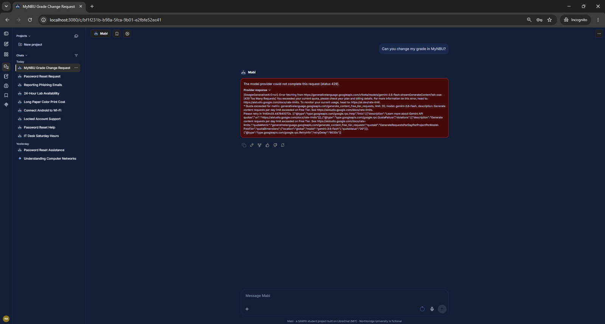

Your system: the reskin and the system card



SYSTEM CARD: Mabi, Northbridge University IT Desk assistant
1. What it does
Mabi is a chat assistant that answers everyday IT questions for students and staff of Northbridge University (a fictional university): passwords, MFA, Wi-Fi, email, NBU Drive, software, printing and the computer labs. It answers only from the IT Desk's own documents, and tells people where to go when it cannot help.
2. Who uses it, and who must not
- Intended users: NBU students and staff with a self-service IT question; IT Desk staff checking what the standard answer is.
- Explicitly NOT for: resetting passwords or unlocking accounts; anything about grades, enrolment, fees, scholarships or discipline; any decision about an identifiable person; security incidents in progress (call the IT Desk); anyone who needs a guaranteed-correct answer without checking.
3. Base system
| Name and version | LibreChat v0.8.9-rc1 (dev image registry.librechat.ai/librechat-ai/librechat-dev, first run 2026-11-16) |
|---|---|
| Source URL | https://github.com/danny-avila/LibreChat |
| Author | Danny Avila and the LibreChat contributors |
| Licence | MIT: LICENSE (copyright notice kept; we may modify and rename) |
| What it did originally | A general ChatGPT-style web app: anyone can sign up, pick from many AI providers and models, and chat about anything. |
4. What I changed (the reskin)
| Part | Original | Mine | Why |
|---|---|---|---|
| Name / branding | "LibreChat", LibreChat logo, grey/green | "Northbridge University IT Desk", assistant "Mabi", bridge-and-star logo, navy/teal/gold theme, own favicon and footer | A stranger should not recognise the original; it should look like a university service |
| Data / content | None | Six invented IT Desk documents (about, accounts & passwords, Wi-Fi & network, email & software, printing & labs, policies & FAQ) | Answers must come from the IT Desk, not from the model's general knowledge |
| Wording / prompts | General assistant, no rules | Mabi's 9 rules: use only the documents; never repeat a password; cannot reset accounts; no grades/fees; ask for no personal details; numbered steps; reply in English/Filipino/Taglish; greeting "Hi, I'm Mabi from the Northbridge University IT Desk…" | Domain language, and safety for an IT help desk |
| Interface | Model picker, all endpoints, open sign-up | One fixed assistant (model specs enforced), Google endpoint only, sign-up closed on AWS, social login and password reset off, conversation titles off (saves model quota) | Fewer choices, smaller attack surface, predictable behaviour |
| AWS services | None (runs anywhere) | Content in S3, rebuilt into the config at every start; key in Parameter Store; logs and metrics in CloudWatch; backups to S3; SNS alerts | Required AWS integration beyond hosting; content can be updated without touching the server image |
5. Data
- Where it came from: written for this project (with AI help, see the declaration), stored in
content/*.mdin the repository and ins3://nbu-itdesk-content-842624819932/content/. No licence issues; it is our own work. - Size and format: 6 Markdown files, about 15 KB in total.
- Anything personal in it: No. All invented. Northbridge University, its rooms, prices, addresses and domains (
*.northbridge.example) do not exist. - Sent to a third-party AI service: Yes. Every question, the recent conversation and the IT Desk documents are sent to Google's Gemini API (free tier, which Google may use to improve its products). Everything sent is invented. Test users must not type real personal data.
6. How good it is
- The one number: 9 out of 10 test questions answered correctly.
- How measured: 10 hand-written questions, each in a new chat, answers compared by hand with the content documents (2026-11-17, model
gemini-3.5-flash, local Docker). Full table on the Results page. - What they covered: simple facts, how-to steps, troubleshooting, prices, a Filipino question, and three limit tests (a typed password, a grade change, a question the documents do not answer).
- An example it gets wrong: "Does NBU give students a free laptop?" The documents never mention laptops. Mabi should have said it does not know; instead it said "No" as a fact, and implied CAD software is free for everyone (it is only for Engineering and Architecture). It turns missing information into a confident answer.
7. How it is served
- Where it runs: Amazon EC2 t3.small (Ubuntu 24.04), Docker, region ap-southeast-1 (Singapore), behind Amazon CloudFront.
- What calls it: web browsers at https://d2f1g5u307k6aa.cloudfront.net; LibreChat's API under
/api/; health check at/health. - The model: Google
gemini-3.5-flash-litevia the Gemini API, free tier, personal account. (Switched fromgemini-3.5-flash, which returned 429/503 errors on the free tier.) - If the model is unavailable: the user sees a red error in the chat (for example HTTP 429 "rate limit"). Nothing is lost; they can retry. Failed and empty answers are counted, and the alarms
nbu-answers-failedandnbu-empty-answeremail the admin.

8. Limitations and risks
- What it cannot do: see or change any account, ticket or setting; know anything not in the six documents; know about events after the documents were written.
- What could go wrong with the data: users may type secrets or personal data anyway. Mabi will not repeat a password, but the text is still stored in MongoDB and sent to Google. Answers can be confidently wrong when the documents are silent (see Q10).
- How it could be misused: to use up the free model quota (anyone with an account can send many questions); to try to make it ignore its rules (prompt injection). Sign-up is closed to limit both.
- What a user must always check themselves: links, prices and opening hours before acting on them; anything to do with their password must be done only on the official password site, never in the chat.
9. Operational summary
- Where the code lives: https://github.com/toledanoigor-glitch/FinalProjectSAM10 (branding, content, config builder, deployment and ops scripts).
- How often it is backed up: database every night at 02:00 Manila to S3 (kept 14 days); content versioned in S3 and in git; key in Parameter Store.
- How we know it is healthy: 9 CloudWatch alarms (site down, server status, CPU, memory, disk, failed answers, empty answers, slow answers, backup missing) emailing the admin; dashboard
Mabi-Operations; auto-heal restarts the app if/healthfails twice. - Who to contact: Igor Toledano (operator). Test question for a quick check: "What time is the IT Desk open on Saturday?" → 8:00 AM to 12:00 NN.